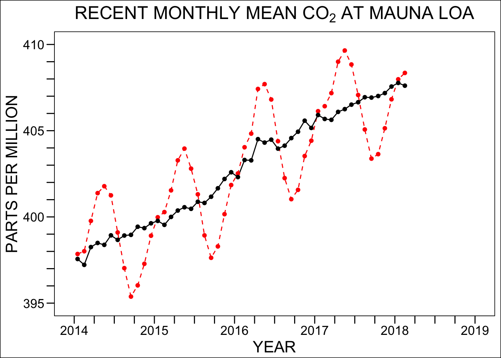
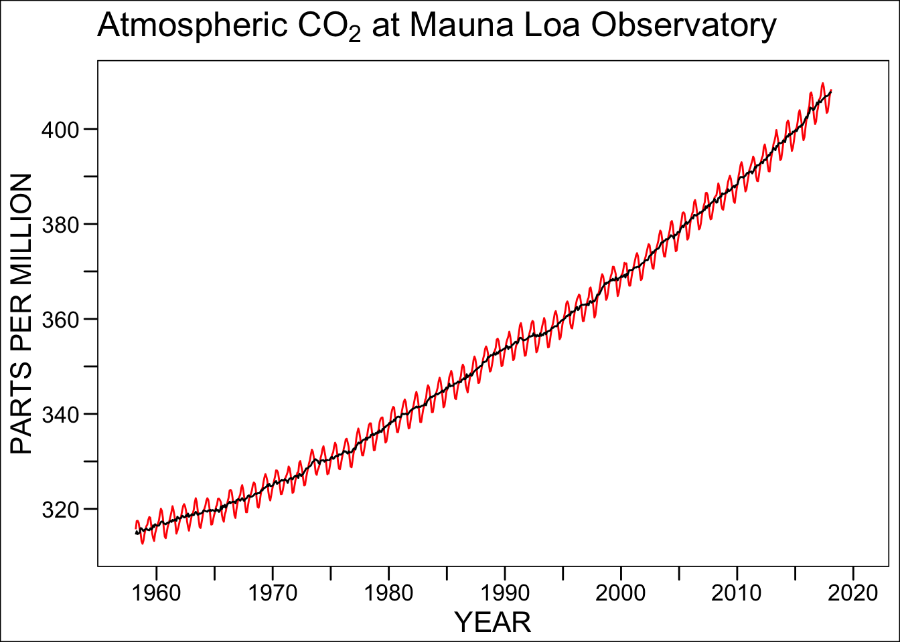
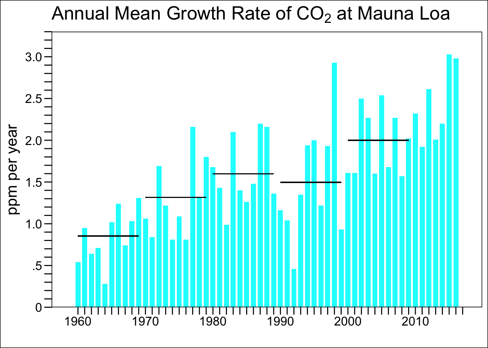
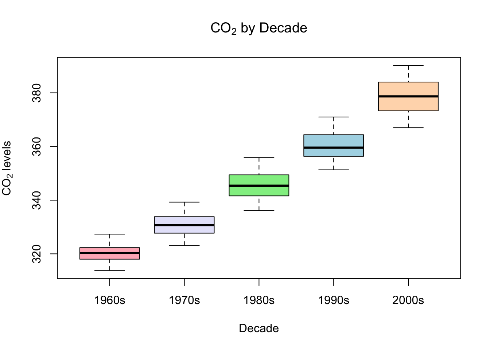
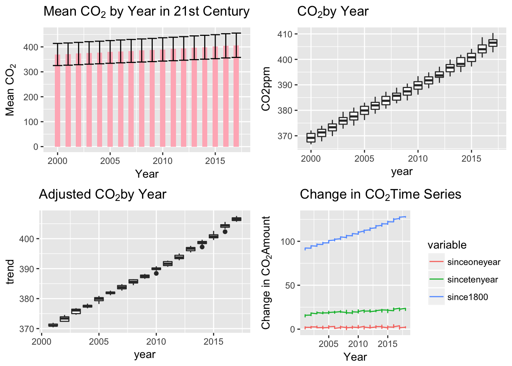

MLC02annual dataset (comma delimited text file)
MLCO2monthly dataset (comma delimited text file)
MLCO2weekly dataset (comma delimited text file)
MLCO2growth dataset (comma delimited text file)
Use only the three datasets provided. In some cases, you will have to create new variables or perform your own calculations / transformations. When replicating graphs, you do not have to include the round NOAA and Scripps badges or the March 2018 date stamps.
Replicate the content of the graph shown on this page.
Replicate the content of the graph shown on this page.
Replicate the content of the graph shown on this page.
Using the monthly data, create side-by-side boxplots of CO2 by decade. Exclude the 1950s (1959 and before) and 2010s (2010 and after) because the data for those decades is incomplete.




## Warning: Removed 20 rows containing non-finite values (stat_boxplot).
The data we were given was from Mauna Loa, Hawaii. This is the complete data from 2014 up until March of 2018. Therefore, the 2018 data is preliminary. The data was obtained at an altitude of 3,000 m in the northern subtropics. The data we were given was reported as a dry air mole fraction defined as the number of molecules of carbon dioxide divided by the number of all molecules in air and then multiplied by one million(ppm), this is including CO2 itself after the water vapor has been removed.
All eight of the graphs show a steady increase, or positive correlation, in CO2 over time. The change in CO2 time series graph displays that while CO2 is increasing over time, it’s not changing drastically over short periods of time. Therefore sugessting that CO2 levels have been steadily increasing since 1800
This data could be used to support the theory of anthropogenic climate change because every one of the eight graphs show us that the CO2 level is continuously increasings over time. It is also a fact that the populaion on Earth is increasing steadily over time. Therefore, we can suggest that the more people on earth, the more likely the CO2 levels are to rise. This is evidence rather than proof because there are other factors effecting climate change other than CO2. You can not predict ahead of time what the other factors will be or what the CO2 levels will be for future years/decades.